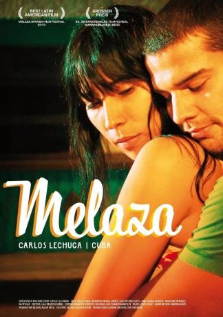

#6627 Melaza
 
 IMDB-Wertung: 6.8 / 10
IMDB-Wertung: 6.8 / 10  Metascore: 0
Metascore: 0 
With the closure of the sugar mill, the little town of Molasses is devastated, lifeless. Aldo and Monica are a young married couple who want to find a way to survive. By supporting each other, they try to save their world without losing their faith.
Jahr: 2012
Dauer: 76 Minuten
FSK:
Land: Kuba Studio: Cine GlobalTonspuren:
Untertitel:
Auflösung: 720p (1280x720) Größe: 1638 MB
Genre: Drama, Komödie
Regisseur: Carlos Lechuga
Drehbuch: Carlos Lechuga
Soundtrack:
Darsteller:
- Yuliet Cruz als Mónica
- Armando Miguel Gómez als Aldo
- Luis Antonio Gotti als Márquez
- Ana Gloria Buduén als The Grandmother
- Carolina Márquez als The Daughter
- Yaité Ruiz als Yamilé
- Augusto Posso als New Policeman
- Jorge Caballero als Danilo
- Enithzabel Castrellon als Alina
- Doris Gutiérrez als Lita
- Felix Beatón als Old Policeman
- Waldo Franco als Juan
Datei: X:\2012(G-M)\Melaza (2012, FSK, 1280x720).mkv seit 26.07.2017
Festplatte: HD 2012(A-M)
 Es gibt insgesamt 112 Filme in der Gruppe '2012(G-M)'
Es gibt insgesamt 112 Filme in der Gruppe '2012(G-M)'